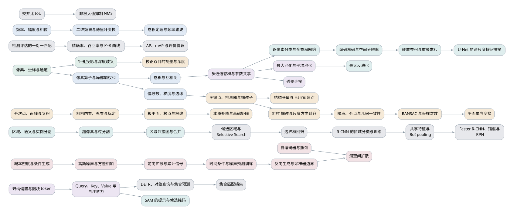

COMP90086 词条百科与知识图¶
本索引收录 121 个词条。按 专题主线 学习，遇到不懂的前置概念，沿词条的“依赖”向前读；按 逐讲核对记录 回查 PDF、转写和版本。原有逐讲笔记保留讲课路线与配图，词条提供独立定义、直接前置和可检验的学习目标。
分类与学习层级是两条独立维度：讲义内容在当前 PDF 中有依据；只在 Workshop 出现在核对的课程 PDF 中未找到对应教学展开、但练习明确介绍；应用举例是具体使用场景或操作实验。应用即便使用讲义概念，也单列可选，不代替概念定义。课堂口头补充写在相应讲义词条的说明中，不能伪称 PDF 原文。所有任务和数值验收只用于理解，标为自拟，不是原题或考试范围判断。
关卡承担关键推理或可复用的起点；任务练习已有概念或检查重要边界；纯文案提供背景，不强设独立交互。这里只完成笔记和教学设计，尚未生成或修改游戏关卡。
课程第 18 讲已取消，按原编号从第 17 讲接到第 19 讲，不设置占位词条或补充任务。
按专题查找¶
| 专题 | 词条数 | 学习入口 |
|---|---|---|
| 1 | 9 | 图像、成像与表示 |
| 2 | 11 | 空间与频率处理 |
| 3 | 23 | 学习特征与表示 |
| 4 | 17 | 匹配与三维几何 |
| 5 | 15 | 图像生成 |
| 6 | 16 | 区域与像素分割 |
| 7 | 15 | 检测、集合与评估 |
| 8 | 15 | 可选专题：Workshop 与应用 |
跨专题知识图¶
箭头从浅层概念指向使用它的概念。此图只展示跨专题骨架；每个词条的完整直接依赖以词条和 关系数据 为准。同一讲的阅读次序不等于必须依赖关系。

箭头从前置指向后续概念。颜色区分专题；本图展示主干连接，不把省略的边当作“没有依赖”。打开全部 121 个词条的依赖图 可放大查看；主干图源 与 完整图源 可用于重新导出。

全部词条¶
| 词条 | 出处 | 分类 | 层级 |
|---|---|---|---|
| 视觉任务与输出 | L01 p.6–8、26–30 | 讲义内容 | 关卡 |
| 像素、坐标与通道 | L02 p.22–27 | 讲义内容 | 关卡 |
| 针孔投影与深度歧义 | L02 p.10–15 | 讲义内容 | 关卡 |
| 焦距、光圈与景深 | L02 p.12–17 | 讲义内容 | 任务 |
| 裁剪、重采样与插值 | L02 p.34–40 | 讲义内容 | 关卡 |
| 朗伯反射与成像歧义 | L05 p.5–7、22–30 | 讲义内容 | 关卡 |
| 光谱、三色响应与颜色空间 | L05 p.9–20 | 讲义内容 | 任务 |
| 阴影、高光与材质 | L05 p.31–35 | 讲义内容 | 纯文案 |
| 不变性、容忍度与等变性 | L05 p.36–53 | 讲义内容 | 任务 |
| 像素算子与局部加权和 | L03 p.6–16 | 讲义内容 | 关卡 |
| 卷积与互相关 | L03 p.17–19 | 讲义内容 | 任务 |
| 平滑、锐化与高斯核 | L03 p.21–35 | 讲义内容 | 关卡 |
| 偏导数、梯度与边缘 | L05 p.39–45 | 讲义内容 | 关卡 |
| 边界与输出尺寸 | L03 p.41–46 | 讲义内容 | 任务 |
| 空间可分离滤波与计算量 | L03 p.37–40 | 讲义内容 | 任务 |
| 频率、幅度与相位 | L04 p.6–22 | 讲义内容 | 关卡 |
| 二维频谱与傅里叶变换 | L04 p.24–35 | 讲义内容 | 关卡 |
| 卷积定理与频率滤波 | L04 p.37–44 | 讲义内容 | 关卡 |
| 硬截断与振铃 | L04 p.45–50 | 讲义内容 | 任务 |
| 频域压缩 | L04 p.52–54 | 讲义内容 | 纯文案 |
| 分类表示与神经网络 | L06 p.5–24 | 讲义内容 | 关卡 |
| 多通道卷积与参数共享 | L06 p.29–46 | 讲义内容 | 关卡 |
| 步幅、尺寸与感受野 | L06 p.47–53 | 讲义内容 | 任务 |
| 最大池化与平均池化 | L07 p.6–14 | 讲义内容 | 关卡 |
| Softmax 与交叉熵 | L07 p.25–28 | 讲义内容 | 关卡 |
| 训练、验证与测试 | L07 p.29、35–40 | 讲义内容 | 关卡 |
| 正则化、Dropout 与提前停止 | L07 p.16–23 | 讲义内容 | 任务 |
| 批次、学习率与增强 | L07 p.30–40 | 讲义内容 | 任务 |
| 小核堆叠与多尺度结构 | L08 p.12–20 | 讲义内容 | 任务 |
| 残差连接 | L08 p.21–26 | 讲义内容 | 关卡 |
| 深度可分离卷积与模型缩放 | L08 p.27–32 | 讲义内容 | 任务 |
| 迁移学习与微调 | L08 p.35–48 | 讲义内容 | 任务 |
| 归纳偏置与图块 token | L09 p.5–14 | 讲义内容 | 关卡 |
| Query、Key、Value 与自注意力 | L09 p.15–18、20 | 讲义内容 | 关卡 |
| 位置编码与 Transformer 块 | L09 p.19–24 | 讲义内容 | 任务 |
| 注意力的成本与数据取舍 | L09 p.26–34 | 讲义内容 | 纯文案 |
| 自监督与对比学习 | L10 p.5–9 | 讲义内容 | 关卡 |
| CLIP 与零样本分类 | L10 p.11–17 | 讲义内容 | 任务 |
| 遮挡、CAM 与表示检查 | L10 p.19–30 | 讲义内容 | 任务 |
| 纹理偏置与分布变化 | L10 p.35–43 | 讲义内容 | 纯文案 |
| 关键点、检测器与描述子 | L11 p.6–11、24–25 | 讲义内容 | 关卡 |
| 结构张量与 Harris 角点 | L11 p.12–21 | 讲义内容 | 关卡 |
| SIFT 描述与尺度方向对齐 | L11 p.25–29 | 讲义内容 | 任务 |
| 噪声、外点与几何一致性 | L12 p.5–9 | 讲义内容 | 关卡 |
| Hough 参数空间投票 | L12 p.11–16 | 讲义内容 | 关卡 |
| RANSAC 与采样次数 | L12 p.18–20 | 讲义内容 | 关卡 |
| 描述子比值检验 | L12 p.22–24 | 讲义内容 | 任务 |
| 平面单应变换 | L12 p.25–28 | 讲义内容 | 关卡 |
| 单视图深度线索 | L13 p.5–8 | 讲义内容 | 任务 |
| 校正双目的视差与深度 | L13 p.10–13 | 讲义内容 | 关卡 |
| 双目窗口代价与全局约束 | L13 p.15–24 | 讲义内容 | 关卡 |
| 监督与双目自监督深度 | L13 p.27–30 | 讲义内容 | 任务 |
| 齐次点、直线与叉积 | L14 p.6–8 | 讲义内容 | 关卡 |
| 相机内参、外参与标定 | L14 p.10–13 | 讲义内容 | 关卡 |
| 极平面、极点与极线 | L14 p.18–22 | 讲义内容 | 关卡 |
| 本质矩阵与基础矩阵 | L14 p.20–26 | 讲义内容 | 关卡 |
| 双目校正、三角化与退化 | L14 p.16、28–31 | 讲义内容 | 任务 |
| 概率密度与条件生成 | L15 p.5–18 | 讲义内容 | 关卡 |
| 自编码器与瓶颈 | L15 p.22–30 | 讲义内容 | 关卡 |
| VAE、重参数化与两项损失 | L15 p.31–38 | 讲义内容 | 关卡 |
| 潜空间采样与编辑 | L15 p.39–46 | 讲义内容 | 任务 |
| GAN 的生成器与判别器 | L16 p.7–14 | 讲义内容 | 关卡 |
| 对抗平衡与模式坍塌 | L16 p.15、19、29–33 | 讲义内容 | 任务 |
| 记忆、逼真度与多样性 | L16 p.21–33 | 讲义内容 | 关卡 |
| 条件 GAN 与循环一致性 | L16 p.35–40 | 讲义内容 | 任务 |
| 高斯噪声与方差相加 | L17 p.10–13 | 讲义内容 | 关卡 |
| 前向扩散与累计信号 | L17 p.10–14 | 讲义内容 | 关卡 |
| 时间条件与噪声预测训练 | L17 p.19–24 | 讲义内容 | 关卡 |
| 反向生成与采样器边界 | L17 p.21–28 | 讲义内容 | 关卡 |
| 潜空间扩散 | L17 p.30、35 | 讲义内容 | 任务 |
| 条件扩散与补全 | L17 p.31–35 | 讲义内容 | 任务 |
| 区域、语义与实例分割 | L19 p.3–8、40–42 | 讲义内容 | 关卡 |
| 颜色聚类、K-means 与 GMM | L19 p.10–13 | 讲义内容 | 任务 |
| Mean shift 的加权均值与模式 | L19 p.14–24 | 讲义内容 | 关卡 |
| 空间颜色特征与带宽 | L19 p.25–27 | 讲义内容 | 关卡 |
| 超像素与过分割 | L19 p.29–30、35、38 | 讲义内容 | 关卡 |
| SLIC 的局部聚类与连通处理 | L19 p.31–33 | 讲义内容 | 关卡 |
| 区域邻接图与合并 | L19 p.36–38 | 讲义内容 | 关卡 |
| 可数物体与连续材质 | L19 p.41 | 讲义内容 | 纯文案 |
| GrabCut 与框内前景背景 | L19 p.43、47–49 | 讲义内容 | 任务 |
| 逐像素分类与全卷积网络 | L20 p.8–13、26–30 | 讲义内容 | 关卡 |
| 编码解码与空间分辨率 | L20 p.12–14、25 | 讲义内容 | 关卡 |
| 最大反池化 | L20 p.15 | 讲义内容 | 关卡 |
| 转置卷积与重叠求和 | L20 p.16–24 | 讲义内容 | 关卡 |
| U-Net 的跨尺度特征拼接 | L20 p.32–36 | 讲义内容 | 关卡 |
| SAM 的提示与候选掩码 | L20 p.38–42、44–47 | 讲义内容 | 任务 |
| 分割损失与掩码质量预测 | L20 p.27、34、43 | 讲义内容 | 任务 |
| 检测框与滑动窗口 | L21 p.6–12 | 讲义内容 | 关卡 |
| 交并比 IoU | L21 p.13–16 | 讲义内容 | 关卡 |
| 候选区域与 Selective Search | L21 p.18–23 | 讲义内容 | 关卡 |
| 边界框回归 | L21 p.26–29 | 讲义内容 | 关卡 |
| R-CNN 的区域分类与训练 | L21 p.21–32 | 讲义内容 | 任务 |
| 共享特征与 RoI pooling | L21 p.34–46 | 讲义内容 | 关卡 |
| Faster R-CNN、锚框与 RPN | L21 p.47–54 | 讲义内容 | 关卡 |
| YOLO v1 的网格预测 | L22 p.5–9 | 讲义内容 | 关卡 |
| DETR、对象查询与集合预测 | L22 p.10–15 | 讲义内容 | 关卡 |
| 集合匹配损失 | L22 p.12–14 | 讲义内容 | 关卡 |
| 非极大值抑制 NMS | L22 p.17–22 | 讲义内容 | 关卡 |
| 检测评估的一对一匹配 | L22 p.23–31 | 讲义内容 | 关卡 |
| 精确率、召回率与 P–R 曲线 | L22 p.24–32 | 讲义内容 | 关卡 |
| AP、mAP 与评价协议 | L22 p.31–36 | 讲义内容 | 关卡 |
| Mask R-CNN 与实例掩码 | L19 p.42–45 | 讲义内容 | 任务 |
| 视觉词袋与空间信息 | L09 p.8–13 | 讲义内容 | 任务 |
| PCA、t-SNE 与表示邻居 | L10 p.20–23 | 讲义内容 | 任务 |
| 分类准确率与错误分析 | L08 p.5–10 | 讲义内容 | 任务 |
| 生成模型的质量与采样成本 | L17 p.36 | 讲义内容 | 纯文案 |
| OpenCV 的 BGR 与数组副本 | 见词条中的 Notebook 章节 | 只在 Workshop 出现 | 任务 |
| 平均注意距离 | 见词条中的 Notebook 章节 | 只在 Workshop 出现 | 任务 |
| 同图不同目标的 Grad-CAM 实验 | 见词条中的 Notebook 章节 | 应用举例 | 任务 |
| 扩散的 1000 步实现实验 | 见词条中的 Notebook 章节 | 应用举例 | 任务 |
| Normalized cut 图分割实验 | 见词条中的 Notebook 章节 | 只在 Workshop 出现 | 任务 |
| 从像素高度计算焦距 | 见词条中的 Notebook 章节 | 应用举例 | 任务 |
| Workshop 5 补充：沿原题计算参数与输出 | 见词条中的 Notebook 章节 | 应用举例 | 任务 |
| Workshop：把训练流程连起来 | 见词条中的 Notebook 章节 | 应用举例 | 任务 |
| Workshop 5 补充：保留原设计的可分离 CNN | 见词条中的 Notebook 章节 | 应用举例 | 任务 |
| Workshop 5 补充：滤波器与特征图不是同一件事 | 见词条中的 Notebook 章节 | 应用举例 | 任务 |
| Workshop 7：把窗口参数与评分参数分开 | 见词条中的 Notebook 章节 | 应用举例 | 任务 |
| Workshop 7：从描述子候选到书封面定位 | 见词条中的 Notebook 章节 | 应用举例 | 任务 |
| Workshop 8：调窗口时观察什么 | 见词条中的 Notebook 章节 | 应用举例 | 任务 |
| Workshop 8：先标定，再检查极线 | 见词条中的 Notebook 章节 | 应用举例 | 任务 |
| Workshop 9：从重建走向生成 | 见词条中的 Notebook 章节 | 应用举例 | 任务 |